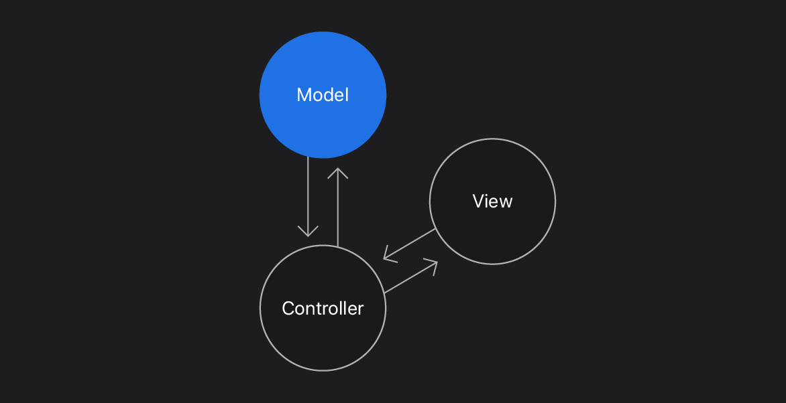

UIKit은 애플 플랫폼에서의 앱 개발을 위한 graphical하고 event-driven 프레임워크이다.
The Product Name you assign is the name of your app. The Organization Identifier is typically a reverse DNS name.
When you build and run, Xcode compiles your app for the selected target, links frameworks, bundles resources, and deploys the binary to your selected device.
Use Interface Builder to lay out views for UIKit apps. Your views are commonly stored in a storyboard file that contains a collection of views and information about how those views relate.

In this section, create a data model to represent reminders in your list. Structure your app on the Model-View-Controller (MVC) design pattern, a common design pattern for UIKit apps.
View objects such as the table view and cells provide visual representations of your data. Model objects manage the app’s data and business logic. View controller objects bridge the views and models, moving data between them at appropriate times.
Extensions can help you organize your code by keeping your structure or class small and focused, while categorizing features.
In the Size inspector, set the view width and height to 44 x 44. This size is the minimum target size required by the Human Interface Guidelines to meet accessibility standards.
With Auto Layout, you set rules to dynamically calculate and adapt the objects in your prototype cell so that it’ll look great in any orientation or on a different device.
UIKit apps use a constraint-based approach for describing the layout of views and their relationships. Auto Layout dynamically calculates the size and position of all views in your view hierarchy based on constraints you define.
The “Constrain to margins” checkbox determines if constraints to the superview use the superview’s margins or its edges.
You can create constraints by Control-dragging between views either on the canvas or the document outline. Try both to discover which method works better for you.
With these few modifications, the cell can easily adapt to new sizes and orientations. It can even adapt to right-to-left languages with no additional work.
Your code communicates with view objects through action and outlet connections.
An action is a function that triggers when a specific event occurs in your app, like when a user taps a button. The button then sends an action message to a target. You can define an action method to accomplish anything from manipulating data to updating the UI.
An outlet is a reference from an object in a storyboard to a source file. You need an outlet to a view object if you access a value from the interface object or modify the interface object in your code.
You’ll connect UI objects to your class by declaring outlets. You’ll also connect an action method that triggers when users interact with a button.
To enable code to send messages to a UI object, create an outlet to connect the UI object to a property in a class.
Using strong reference types for all outlets in this cell prevents changes in the size class from deallocating objects??
This reuse identifier is the cell identifier for dequeuing cells in a table view data source.
From the Xcode menu, choose Editor > Assistant. With an element in the table view cell selected, Xcode opens the Swift file associated with the table view cell.
To display reminders data in a list, you need to create a table view controller. To accomplish this, subclass UITableViewController to adopt protocols and behaviors specific to table views. Then implement methods from the UITableViewDataSource protocol to generate and manage table data.
Interface Builder uses the class identity to determine which class to instantiate when unarchiving the view hierarchy at runtime.
Table views manage only the presentation of their data. They don’t manage the data itself. To manage the data, you must provide the table with a data source object — an object that implements the UITableViewDataSource protocol.